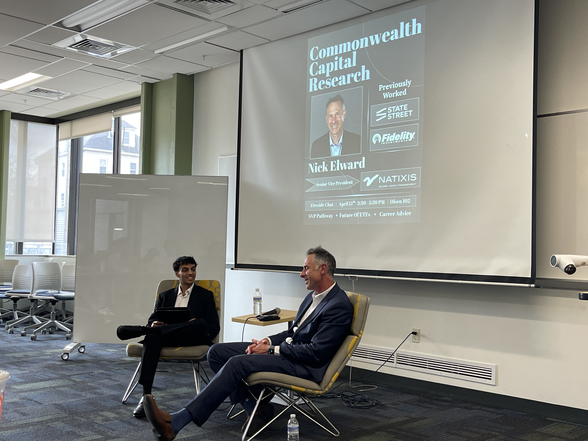

Commonwealth Capital Research · UMass Lowell
Founder
Founder
& President.
Built UML's first capital markets org from scratch. Secured pipelines with Franklin Templeton and MFS. Competed nationally with a live LBO model.


CCR details
The Founding
UML's first capital markets org
- CCR is UML's first org built around capital markets education and recruiting.
- Built the structure, membership pipeline, curriculum, and external partnerships in the first semester.
Institutional Recruiting
Franklin Templeton & MFS Investments
- Secured recruiting pipelines with Franklin Templeton and MFS Investments, two of Boston's largest asset managers.
- 15 UML students placed across both firms since CCR built the relationships. These pipelines didn't exist before.
Competition
St. John's PE Case Competition, NYC
- Took CCR to the St. John's Private Equity Case Competition in New York City.
- Built a full LBO model and pro-forma financials for a corporate carveout of two inspection and certification companies.
- Competed against target school teams and delivered a live deal presentation.
What it takes
Starting something that didn't exist
Founding something institutional at a school that doesn't have it isn't joining a club. It's building what wasn't there. CCR proved UML has the talent. The pipelines and the competition record are now real. The only thing missing before was the org to surface it.
CCR on LinkedIn ↗